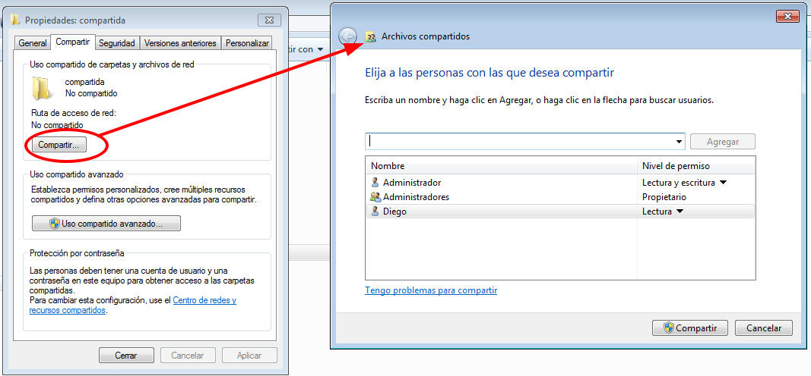
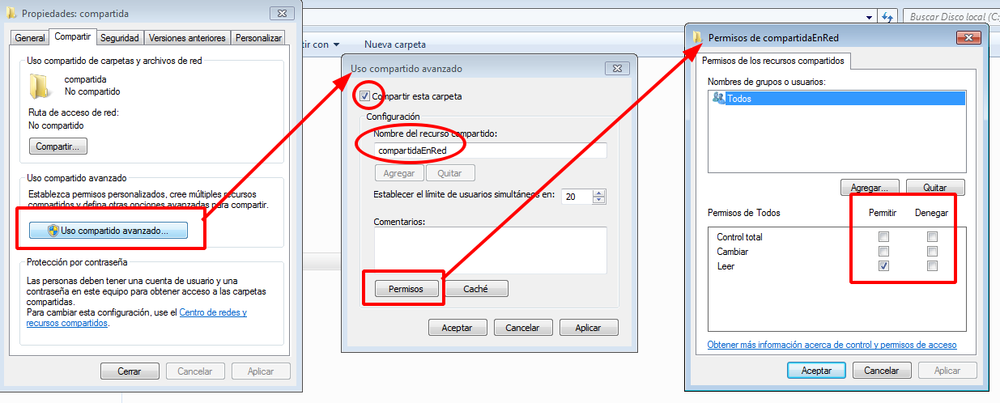
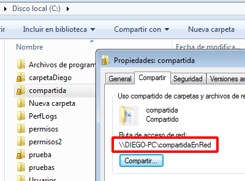

Podemos compartir carpetas también desde las opciones de propiedades de los objetos de la siguiente forma:
Desde la opción de "uso compartido avanzado" podemos establecer los permisos de la carpeta compartida, de forma mas especifica.
Una vez compartida la ruta de acceso a la red se compone con el nombre del equipo en la red y lo podemos ver en la pestaña compartir:
Esta ruta puede usarse directamente en el explorador de archivos de Windows para acceder a la carpeta compartida desde otro PC.